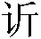
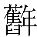

霁云先生：
顷收到二月二日大札。《集外集》止抽去十篇，诚为“天恩高厚”，但旧诗如此明白，却一首也不删，则终不免“呆鸟”之讥。阮大铖虽奸佞，还能作《燕子笺》之类[116]，而今之叭儿及其主人，则连小才也没有，“一代不如一代”，盖不独人类为然也。
文字请此辈去检查，本是犯不上的事情，但商店为营业起见，也不能深责，只好一面听其检查，不如意，则自行重印耳。《启事》及《来信》，自己可以检得，但《革命文学……》[117]改正稿，希于便中寄下。近又在《新潮》上发见通信一则[118]，此外当还有，拟索性在印杂文时补入。
被删去五分之四的，即《病后杂谈》，文学社因为只存一头，遂不登，但我是不以悬头为耻的，即去要求登载，现已在二月号《文学》上登出来了。后来又做了一篇，系讲清初删禁中国人文章的事情，其手段大抵和现在相同。这回审查诸公，却自己不删削了，加了许多记号，要作者或编辑改定，我即删了一点，仍不满足，不说抽去，也不说可登，吞吞吐吐，可笑之至。终于由徐伯

[昕][119]手执铅笔，照官意改正，总算通过了，大约三月号之《文学》上可以登出来。禁止，则禁止耳，但此辈竟连这一点骨气也没有，事实上还是删改，而自己竟不肯负删改的责任，要算是作者或编辑改的。俟此文发表及《集外集》出版后，资料已足，我就可以作杂文后记[120]了。今年上海爆竹声特别旺盛，足见复古之一斑。舍间是向不过年的，不问新旧，但今年却亦借口新年，烹酒煮肉，且买花炮，夜则放之，盖终年被迫被困，苦得够了，人亦何苦不暂时吃一通乎。况且新生活[121]自有有力之政府主持，我辈小百姓，大可不必凑趣，自寻枯槁之道也，想先生当亦以为然的。专此布复，并颂

禧。迅 启上 二月四夜
注 释
[116] 阮大铖作《燕子笺》 参看350109①信注〔1〕。
[117] 《革命文学……》 应为《帮忙文学与帮闲文学》。
[118] 指《对于〈新潮〉一部分的意见》，后收入《集外集拾遗》。
[119] 徐伯昕（1904—1984） 江苏武进人，当时任上海生活书店经理。
[120] 指《且介亭杂文·附记》。
[121] 新生活 指蒋介石为配合对苏区红军的“围剿”而发起的所谓“新生活运动”。1934年2月19日，蒋介石在南昌行营提出“新生活运动”，鼓吹“使全国国民的生活能够彻底军事化”，要以“礼义廉耻”为“生活准则”，随后在南京成立“新生活运动促进会”，自任会长，并通电全国推行。